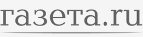

Игорь Рыбаков запустил фонд для развития предпринимательской экосистемы...
Подробнее
Оскар Хартманн возглавил фонд Игоря Рыбакова по поддержке предпринимательства на 1 млрд рублей...
Подробнее

Миллиардер из списка Форбс запускает новый фонд...
Подробнее
«В своей работе фонд будет использовать не только собственные разработки, но и зарубежный опыт»
Подробнее